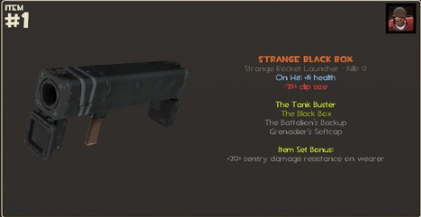
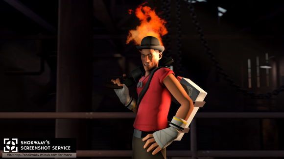
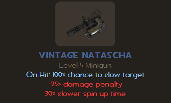
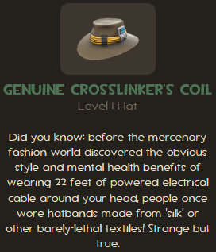
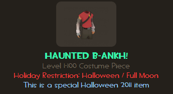
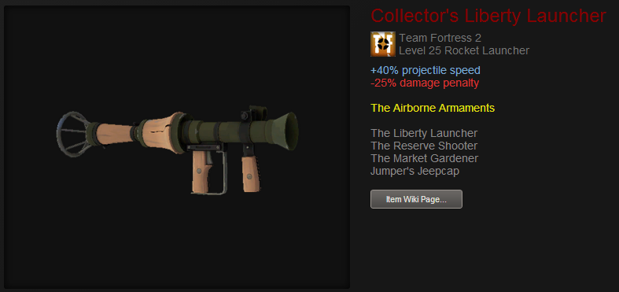

Strange items description
Strange quality is an item quality found on weapons obtained from unlocking Mann Co. Supply Crates of certain series. Introduced in the Über Update on June 23, 2011 Patch, Strange weapons track kills, or other events, such as kill assists, and record them as an item attribute, allowing the count to be viewed by players. The weapon is then awarded a rank as the recorded count increases, with the rank affixed to the beginning of the item's name. Additionally, some weapons have a second count to track other associated actions, such as Sentry Gun kills; however, the secondary count does not contribute toward rank progress. Each time the player achieves a new rank, it is announced to all players on the server with a message in the chat box; A notification pop-up also appears only for the player the strange item belongs to. Strange items have orange text instead of white.
Strange Items held
wait for it
Unusual hats/misc
Unusual quality is an item quality used on hats and some miscellaneous items with a special attached particle effect. There are currently 259 items that can have one of 48 total effects. The only methods of obtaining an Unusual item are by potentially unlocking a Mann Co. Supply Crate with a Mann Co. Supply Crate Key or via trading. The chances of uncrating an Unusual item are about one in one hundred and fifty, or 0.66%.Unlike regular items which can only be obtained from specific crates, any Unusual item with any particle effect can be randomly obtained from any given crate of any Series. Unusual items have purple text.

Due to their unique particle effect decorations and their extremely low probability of being obtained from crates, Unusual items are considered to be some of the rarest items in TF2.
Unusual hats/misc held
wait for it
Vintage items
Vintage is an item quality used most commonly to designate previously Unique items obtained prior to the Mann-Conomy Update, where it was introduced. This was to increase their appeal in trading. In the March 15, 2011 Patch, several expensive crafting recipes were modified to be cheaper. To recognize items that had been crafted while the recipes were expensive, Valve upgraded them to Vintage quality. In some cases, items that have been re-granted to users by Steam support (after being either accidentally deleted or stolen) were assigned Vintage quality. Vintage items have blue text.

Vintage items held
wait for it
Genuine items
The Genuine item quality was originally introduced alongside the RIFT promotion as to distinguish items obtained through participation in a cross-game promotion or an in-game event, opposed to the same items gained via other methods such as random drops or crafting. Genuine items have green text.

Genuine items held
wait for it
Haunted items
Haunted is an item quality designated for Halloween-themed items. Many, but not all, Halloween items have a Haunted version. Costume pieces from the Very Scary Halloween event could be obtained in Haunted quality if a Haunted Halloween Gift was found in the Underworld section of Eyeaduct, or rarely from a Halloween Goodie Cauldron. During the Spectral Halloween Special, items unboxed from Eerie Crates were Haunted, with the exception of the event in which an Unusual hat was found instead. There was also a chance that a Voodoo-Cursed Soul can be obtained in Haunted quality when a player used a Pile of Curses. Haunted versions of items are visually and functionally identical in-game to their normal counterparts. Haunted items have a light bluish green text.
Haunted items held
wait for it
Collector's items
Collector's is an item quality that is given to items obtained by completing special Chemistry Sets introduced in the November 12, 2013 Patch. The Chemistry Sets convert 200 Unique copies of the item into one Collector's quality item. Collector's items have red text.
Collector's items held
Wait for it, Just kidding these are way to hard to make